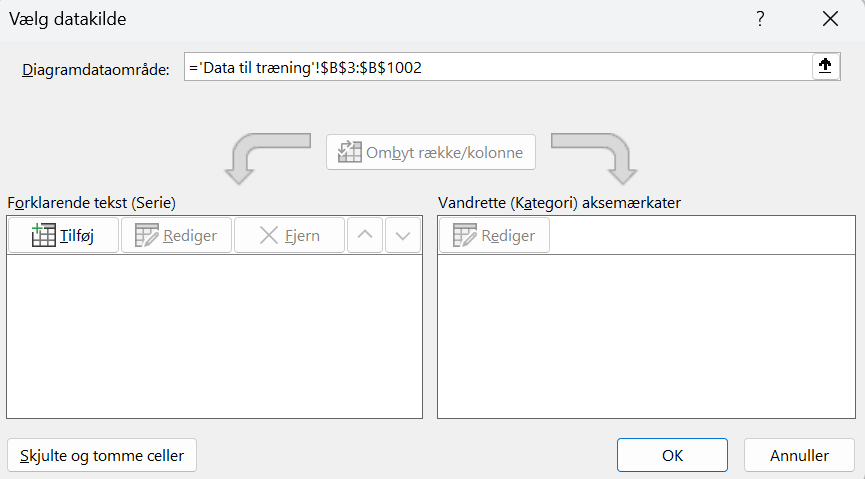

Dette forløb er udviklet i samarbejde med Mads Rovsing Jochumsen, Institut for Medicin og Sundhedsteknologi, AAU.
CautionForudsætninger og tidsforbrug
Forløbet kræver kendskab til:
Koordinatsystemer.
Rette linjer.
Procentregning.
Punktplot.
Middelværdi.
Der gives i opgaverne vejledning til at lave databehandling i Excel, men det er valgfrit, hvilket program man vil bruge. Vær også opmærksom på, at der kan være forskellige versioner af Excel, så vejledningen passer ikke nødvendigvis 1:1 med elevernes version.
Tidsforbrug: Ca. 2 x 90 minutter.
Formål
Mennesker, som lider af nervesygdommen ALS, mister på et tidspunkt muligheden for at kommunikere med andre mennesker, fordi deres evne til at tale og bevæge sig gradvist svækkes.
Dette forløb handler om, hvordan kunstig intelligens kan bruges til at hjælpe ALS patienter med at kommunikere ved hjælp af tankens kraft!
Der er oplagte samarbejdsmuligheder med biologi og/eller psykologi/filosofi, som de sidste to opgaver illustrerer.
Introduktion
Start med at se denne video, hvor Mads Rovsing Jochumsen fra Institut for Medicin og Sundhedsteknologi introducerer idéen om kommunikation ved tankens kraft:
Binært kontrolsignal
Vi vil starte med at se på, hvordan man med en forholdsvis simpel menu kan hjælpe en ALS-ramt person med at skrive et ord.
Vi forestiller os, at der optages hjernesignaler fra en person, der tænker på en bevægelse med foden, når han/hun ønsker at vælge et bestemt punkt i en menu. Til alle andre tidspunkter sidder personen og slapper af, og derfor optages kun den almindelige baggrundshjerneaktivitet. Der er her tale om et såkaldt binært kontrolsignal1: enten tænker personen på at bevæge foden, eller også tænker han/hun ikke på at bevæge foden.
1 Det betyder, at der er to valgmuligheder. For eksempel ja/nej, tænd/sluk eller 0/1.
Lad os sige, at Magnus (fra videoen) gerne vil skrive "HEJ". Det kan foregå sådan her:
I 2 sekunder får Magnus vist den første del af menuen, som er markeret med lyseblå her:
Magnus skal ikke bruge nogen af bogstaverne i denne del af menuen, så han slapper bare af i de 2 sekunder. Det fortolker vi, som at Magnus har sagt "nej" til bogstaverne i den første kategori og går derfor frem i menuen og viser Magnus denne del:
Magnus vil gerne skrive ét af bogstaverne på denne menu – nemlig "H". Derfor laver Magnus nu en imaginær bevægelse med sin fod i 2 sekunder2. Derfor får Magnus vist disse syv bogstaver (samt muligheden "EXIT") på skift i 2 sekunder. Vi starter med "H":
2 Bemærk, at Magnus ikke bevæger foden, for det kan han ikke. Men han tænker på at bevæge foden. Det er derfor, at bevægelsen kaldes for imaginær.
Magnus vil gerne skrive "H", og derfor laver han igen den imaginære bevægelse med foden. På et tilknyttet display skrives der nu "H".
Vi går tilbage til punkt 1, og da Magnus skal skrive "E" som det næste, laver han med det samme den imaginære bevægelse med foden. Sådan fortsættes indtil Magnus har fået skrevet "HEJ".
NoteOpgave 1: Hjernestyring med binært kontrolsignal
Estimer hvor lang tid det vil tage at stave ordet "MUSIK" med det beskrevne system, hvis
der ikke bliver lavet fejl.
der bliver lavet 1 fejl.
der bliver lavet 2 fejl.
Find på andre eksempler på teknologier/applikationer man kan styre med hjernen ved at have et binært kontrolsignal, som for eksempel kobles sammen med en menu. Det behøver ikke at være begrænset til patienter med motorisk handicap.
Træning af en AI model
Mens Magnus enten bare slapper af eller tænker på at bevæge foden, optages hjernesignalerne med en samplingsfrekvens på 500 Hz, hvilket betyder, at der er 500 målepunkter per sekund. Hver optagelse er to sekunder lang, og dermed er der 1000 målepunkter. Udfordringen er nu, at vi ved hjælp af disse målinger skal kunne se forskel på, om Magnus bare slapper af, eller om han tænker på at bevæge foden.
Vi har samlet data for sådanne målinger i en Excel-fil, hvor data er blevet opdelt i to faner: I den første fane er der hjernesignaler for målinger af 15 gange med imaginær bevægelse og målinger for 15 gange med baggrundshjerneaktivitet, som skal bruges til at træne en AI model, så den kan se forskel på de to forskellige slags hjernesignaler. Disse data kaldes for træningsdata. I den anden fane er der henholdsvis 10 gentagelser af imaginære bevægelser og af baggrundshjerneaktivitet, som skal bruges til at teste, hvor god vores AI model er. Disse data kaldes for testdata. Data ligger i Excel-filen her.
NoteOpgave 2: Plot af træningsdata
Hent Excel-filen med data, gem den på din egen computer og gør følgende for de data, som ligger i fanen "Data til træning":
Lav punkt- eller linjeplot af data for følgende imaginære bevægelser: 1, 5, 10 og 15 (det vil sige 4 figurer i alt).
Sådan gør du i Excel
Hvis du vil løse opgaven i Excel, bør du åbne filen i selve Excel, ikke i en browser.
Placer dig i et felt på linje 1006 (det vigtige er, at der er under alle data).
Vælg "Indsæt" \(\rightarrow\) "Diagrammer". Her vælger du et punkt- eller linjediagram (på den måde får du et tomt diagram).
Højreklik på det tomme diagram og tryk på "Vælg data…".
Markér nu data for den første gentagelse. Det kommer til at se sådan her ud:

Tryk på "OK".
Ændr diagramtitlen til "Imaginær bevægelse 1" (dobbeltklik, hvor der står "Diagramtitel").
Gør nu noget tilsvarende for imaginær bevægelse gentalgelse 5. Du kan med fordel kopiere det, du lige har skrevet i "Diagramdataområde" ovenfor og ændre det til ='Data til træning'!$F$3:$F$1002, fordi data for imaginær bevægelse gentagelse 5 står i kolonne F.
Fortsæt på samme måde med imaginær bevægelse gentagelse 10 og 15.
Endeligt kan du få Excel til at lave punkt-/linjeplots for alle 15 dataserier samlet. Det giver en anden form for overblik på bekostning af detaljerne. Placer cursoren i et felt blandt data for de 15 dataserier for imaginære bevægelser og indsæt punkt-/linjeplot.
Lav på tilsvarende vis punkt-/linjeplot for følgende gentagelser af baggrundshjerneaktivitet: 1, 5, 10 og 15 (det vil sige 4 figurer i alt).
Kan du umiddelbart ud fra de 8 plots se, om der er noget, som adskiller de imaginære bevægelser fra baggrundshjerneaktiviteterne?
I stedet for at se på hver af de 15 gentagelser enkeltvist, vil vi nu prøve at se på gennemsnittet henover de 15 gentagelser:
NoteOpgave 3: Plot af gennemsnitsmålinger (træningsdata)
Udregn gennemsnittet af de 15 gentagelser for de imaginære bevægelser for hvert måletidspunkt. Så i stedet for 15 gange 1000 målinger, får du 1000 værdier.
Sådan gør du i Excel
Stil dig i celle Q2 og skriv Gns (for gennemsnit).
Stil dig i celle Q3 og skriv =MIDDEL(B3:P3).
Tag ved den lille kasse i nederste højre hjørne af celle Q3 og træk den ned, så du får beregnet alle 1000 gennemsnitsværdier (du ender altså med en 2-sekundersoptagelse som er et gennemsnit af de 15 gentagelser).
Lav et punkt-/linjeplot for de beregnede gennemsnit fra de imaginære bevægelser i træningsdata.
Udregn og lav et plot på tilsvarende vis for gennemsnittet på tværs af de 15 måleserier af baggrundshjerneaktivitet i træningsdata.
Kan du på de to plot af gennemsnittene se, om der er noget, som adskiller de imaginære bevægelser fra baggrundshjerneaktiviteterne? Beskriv mundtligt så præcist som muligt, hvad det er, der adskiller de to plots.
For at kunne lave en simpel AI model, som kan kende forskel på en imaginær bevægelse og en baggrundshjerneaktivitet, er vi nødt til på en eller anden måde at "koge" de 1000 målinger ned til nogle ganske få værdier, som på en eller anden måde opsummerer den information, som de 1000 målinger giver og som samtidig kan bruges til at adskille en imaginær bevægelse fra en baggrundshjerneaktivitet. Denne opsummering af information kalder man for en feature.
NoteOpgave 4: Features
Kom med idéer til mindst to features, som kan bruges til at beskrive og adskille en imaginær bevægelse fra en baggrundshjerneaktivitet ved at se på de plots, som du lavede i opgave 3.
At udvælge gode features kaldes for feature engineering. Det skal vi prøve nu.
Se på de to plots af gennemsnitsmålinger, som du lavede i opgave 3. Hvis du ser på gennemsnitsplottet for den imaginære bevægelse, ser det ud som, at kurven danner et "V": Først falder den og dernæst stiger den igen. Kurven for baggrundshjerneaktiviteten ser ud til bare at falde en smule (læg mærke til hvor forskellig de to skalaer på \(y\)-aksen er).
En idé til to features, som kan beskrive disse to opførelser, er følgende:
For hver måleserie, inddel data i tre (næsten) lige store dele og udregn et gennemsnit af målingerne i hver del (nu arbejder vi altså med gennemsnit for den enkelte måleserie og ikke på tværs af de de 15 måleserier som før):
Hvis vi ser på ændringen fra det første til andet gennemsnit og ændringen fra det andet til det tredje gennemsnit, så vil vi forvente følgende (formuleret i lidt vage vendinger!):
I næste opgave vil vi udregne disse to features – men læg mærke til, at der ikke er noget facit i forhold til valget af features. Vi kunne have valgt alle mulige andre features, som måske kunne have været lige så gode eller bedre!
NoteOpgave 5: Udregning af to features
Udregn ovenstående to features for hver af de 15 imaginære bevægelser og for hver af de 15 målinger af baggrundshjerneaktiviteterne.
Sådan gør du i Excel
Stil dig i celle A1004 og skriv "Feature 1", mens du i celle A1005 skriver "Feature 2".
For gentagelse 1 står alle målinger i celle B3 til B1002. Derfor udregner vi feature 1 og 2 for den første gentagelse på denne måde:
I celle B1004 skriver du: =MIDDEL(B336:B668)-MIDDEL(B3:B335)
I celle B1005 skriver du: =MIDDEL(B669:B1002)-MIDDEL(B336:B668)
Markér de to celler og træk til højre, så du får udregnet de to features for de resterende gentagelser – både for de imaginære bevægelser og for baggrundshjerneaktiviteten.
Vi skal nu på baggrund af disse to features se, om vi kan få adskilt målinger, som stammer fra en imaginær bevægelse, fra målinger, som stammer fra en baggrundshjerneaktivitet.
NoteOpgave 6: Plot af features
Lav et punktplot med "Feature 1" ud af \(x\)-aksen og "Feature 2" op ad \(y\)-aksen for de 15 måleserier, som stammer fra imaginære bevægelser.
Sådan gør du i Excel
Indsæt et tomt punktplot, som du gjorde i opgave 2 (men denne gang er det vigtigt at det er et punkt-plot og ikke et linjeplot).
Højreklik og tryk på "Vælg data…".
Tryk på "Tilføj"-ikonet.
Ved "Serienavn" skriver du "Imaginær bevægelse - træningsdata"
Under "X-serieværdier" markerer du rækken med værdier af feature 1 for de 15 gentagelser af den imaginære bevægelse.
Under "Y-serieværdier" vælger du værdierne for feature 2.
Det ser sådan her ud:
Højreklik igen på punktplottet og tilføj en ny serie, som du kalder for "Baggrundsaktivitet - træningsdata", hvor du igen vælger feature 1 og 2, men denne gang fra gentagelserne, som hører til målingerne af baggrundshjerneaktiviteten.
Klik på punktplottet og tryk på "+"-ikonet og sæt flueben ved "Aksetitler" og "Forklaring".
Dobbeltklik på aksetitler og skriv "Feature 1" ved \(x\)-aksen og "Feature 2" ved \(y\)-aksen.
Tryk på ét af punkterne, som hører til den imaginære bevægelse, højreklik og tryk på "Udfyldning" og vælg "Ingen udfyldning".
Gør noget tilsvarende for de punkter, som hører til baggrundsaktiviteten.
Det skulle gerne ende med at se nogenlunde sådan her ud:
Vil du i dit punktplot kunne indtegne en ret linje, som adskiller de to forskellige typer af punkter fra hinanden?
Ekstra udfordring:
Indtegn linjen i punktplottet.
Sådan gør du i Excel
Tilføj en ny dataserie bestående af to punkter, som du efterfølgende tegner en tendenslinje igennem. Sørg for at få linjens ligning vist i plottet.
Det skulle gerne være sådan, at du har indtegnet (eller kan forestille dig) en linje, som kan adskille de to forskellige slags punkter fra hinanden. Denne linje kan bruges til at klassificere en ny måling, hvor vi ikke kender kategorien på forhånd. Det gøres ved at lave hjernemålingen i 2 sekunder (det vil sige i alt 1000 målepunkter), udregne feature 1 og 2 og dernæst tegne det tilhørende punkt ind i punktplottet.
Hvis det nye punkt ligger på den side af linjen, hvor punkterne for de imaginære bevægelser ligger, så vil vi klassificere den nye måleserie som en imaginær bevægelse og omvendt, hvis det nye punkt ligger på den anden side af linjen. Det kan derfor bruges til at afgøre, om en person for eksempel har sagt ja eller nej til en kategori eller et bogstav i en menu, som vi så det i eksemplet med Magnus tidligere.
Men hvor godt virker det mon? Der må jo nogle gange ske fejl, fordi alle målinger er behæftet med måleusikkerhed. Det er heller ikke sikkert, at der findes en rette linje, som altid kan skille de røde punkter fra de blå. Og selv hvis der er, er det ikke sikkert, at vi baseret på træningsdata har fundet den helt rigtige linje.
Det er her, at testdatasættet kommer ind i billedet. Det skal nemlig hjælpe os med at vurdere, hvor god vores AI model er, når vi prøver at bruge den på ukendt data.
NoteOpgave 7: Vurdering af modellen
Gør som i opgave 6, men lav nu punktplot med features baseret på testdatasættet i fanen "Data til test". Brug de samme farver som før, men lad punkterne være udfyldte, så du kan kende forskel på testdata og træningsdata.
Nu ville det jo være bedst, hvis alle punkterne for imaginære bevægelser fra testdata lå på den side af linjen, hvor vi har punkterne fra imaginære bevægelser fra træningsdata, og tilsvarende for punkter for baggrundsaktivitet.
Tæl, hvor mange punkter af hver type, der ligger på den rigtige side af linjen, og hvor mange, der ligger på den forkerte side. Vi bruger dermed linjen til at klassificere punktet som enten imaginær bevægelse eller baggrundsaktivitet, og sammenligner med den faktiske type af punktet.
Udfyld tabellen herunder – denne tabel kaldes for en confusion matrix.
Klassificeret som imaginær bevægelse
Klassificeret som baggrundshjerneaktivitet
Faktisk imaginær bevægelse
Faktisk baggrundshjerneaktivitet
Den andel (i procent) af punkterne, som er blevet klassificeret korrekt, kaldes for klassifikationsnøjagtigheden – eller på engelsk classification accuracy (CA).
Udregn på baggrund af din confusion matrix klassifikationsnøjagtigheden.
Hvis I er flere (grupper) i klassen, og måske har valgt lidt forskellige linjer, kan I få forskellig klassifikationsnøjagtighed, da den jo afhænger af valg af linje.
Klassificering ved beregning (kan udelades)
I opgave 7 har vi klassificeret en ny hjernemåling fra testdatasættet ved at udregne de to features og se efter om det tilhørende punkt ligger over eller under vores skillelinje, som vi fandt ved hjælp af træningsdatasættet. Vi kunne også have gjort det ved at udregne den lodrette forskel fra punktet og ned til linjen3.
Figur 1: Beregning af den lodrette forskel fra et punkt til en linje.
Den lodrette forskel fra punktet \(P(x_1,y_1)\) ned til linjen med ligning \(y= a \cdot x + b\) må være (se figur 1):
\[
y_1 - (a \cdot x_1 + b)
\] Hvis denne forskel er positiv ligger punktet over linjen og omvendt, hvis forskellen er negativ.
NoteOpgave 8: Klassificering ved beregning (kan springes over)
Hvis du i opgave 6 ikke har lavet ekstra udfordringen og fundet ligningen for en linje, som kan adskille punkterne, så start med at gøre det.
For hvert punkt i dit punktplot skal du udregne den lodrette forskel fra punktet til din linje.
Lav nu en klassificering vha. fortegnet på den beregnede forskel.
Sådan gør du i Excel
Det kan gøres ved at skrive: =HVIS(B1006<0;"Imaginær";"Baggrund"), hvor B1006 refererer til den celle, hvor den lodrette forskel fra punktet til linjen er beregnet.
De næste opgaver kan besvares, hvis forløbet anvendes i samarbejde med biologi og/eller psykologi/filosofi.
Samarbejde med biologi
NoteOpgave 9: Fysiologi og patofysiologi
Hvilke hjerneområder er de vigtigste i forhold til at sende signal ned til musklerne om at starte en bevægelse?
Hvordan startes en bevægelse efter "kontrolsignalet" om at starte en bevægelse har forladt hjernens cortex?
Beskriv hvad der sker med nervesystemet, når det rammes af ALS (amyotrofisk lateral sklerose).
Beskriv progressionen af sygdommen og hvilke funktioner patienten mister over tid. Findes der hjælpemidler der kan erstatte de tabte funktioner eller afhjælpe handicappet?
Samarbejde med psykologi eller filosofi
NoteOpgave 10: Etik
Er det ansvarligt at indoperere elektroder i hjernen? Hvilke fordele og ulemper er der ved henholdsvis den non-invasive (electroencephalography) og invasive (electrocorticography) måde at måle hjerneaktivitet på?
Hvor "dårlig" skal en patient være før han/hun tilbydes at få indopereret en elektrode i hjernen?
Skal man stole på et ønske om aktiv dødshjælp, der er kommunikeret via hjernestyring? Er der en risiko for hacking?